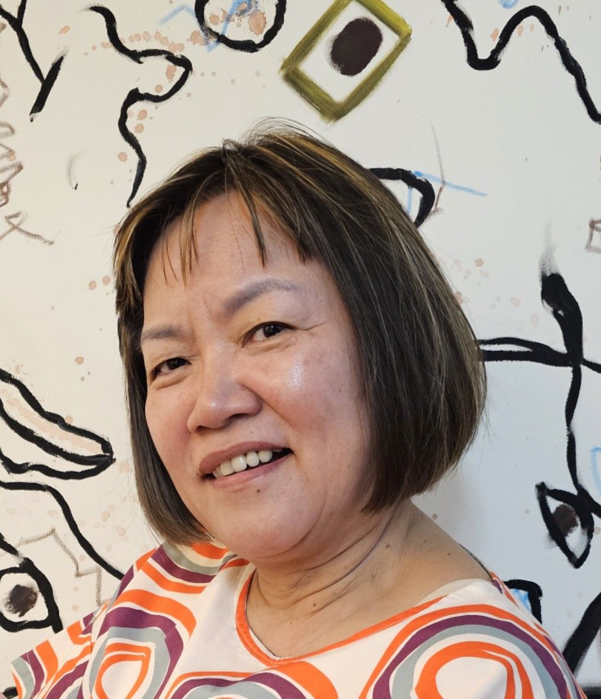
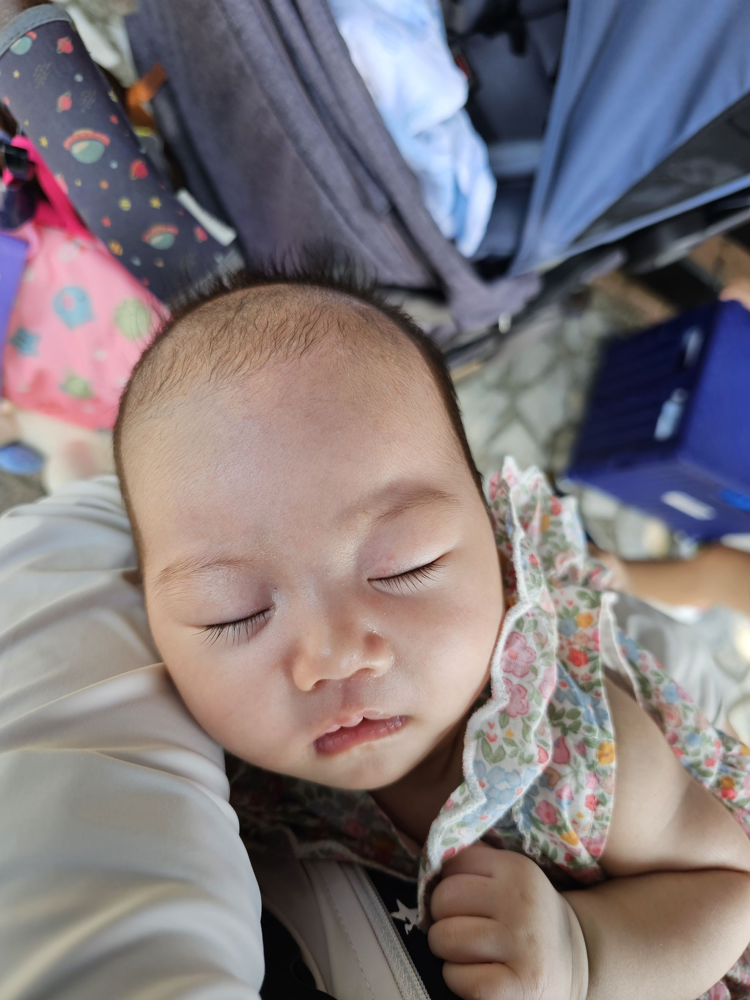

呂再興
1930/01/01

黃玉英
1935/05/10
特寫
呂天貴
1958/03/12
特寫
呂彩鳳
1961/07/19
特寫
夏素貞
1971/04/05
特寫
呂春郎
1959/11/14
特寫
巫素蘭
1965/02/18
特寫
呂春成
1960/12/25
特寫
呂彩美
1970/06/18
特寫
許錫金
1956/03/18

呂采妮
1960/11/11
特寫
呂美瑤
1973/05/30
特寫
向光華
1970/02/14
特寫
呂文正
1968/09/05
特寫
戴佩伶
1971/11/22
特寫
呂如潔
1985/01/15
特寫
呂如萍
1987/03/22
特寫
呂靜怡
1989/08/11
特寫
呂嘉綺
1992/10/04
特寫
呂慧君
1995/12/19

滕彥君
1990/04/16

許晊銘
1989/11/08

許瑋芬
1982/01/26
賀思明
1985/04/27
特寫
向秐蓁
1987/06/04
特寫
呂旻哲
1996/02/11
特寫
呂昀真
1998/08/24
特寫
洪淨池
1982/11/05
特寫
呂婉婷
1986/04/20
特寫
呂少君
1988/09/15
特寫
呂淑婷
1991/07/07
特寫
呂維浩
1994/03/30
特寫
陳鶴仁
1992/08/14
特寫
陳皇助
1995/11/23

許嵐馨
2020/01/31

許嵐靖
2021/10/13

許嵐蘊
2026/04/19

許莉岑
2015/03/28

許嘉丞
2016/07/21

許嘉安
2021/05/17
特寫
向詩丹
2015/07/19
特寫
蘇宣妤
2022/07/29
特寫
洪牧淮
2014/05/12
特寫
洪牧黎
2017/10/25